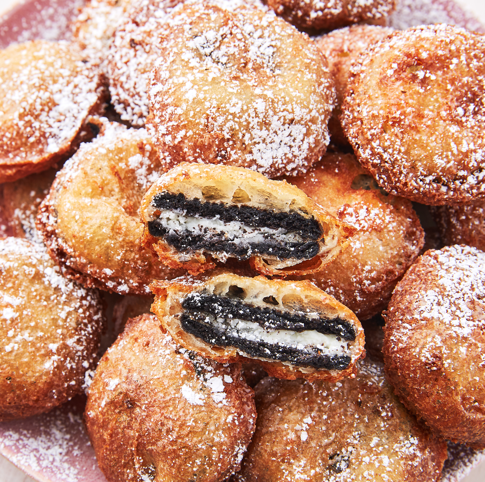

Deep Fried Oreo Recipe

Desription
Deep-fried Oreos are a carnival favorite where I grew up. Oreos get dipped into pancake batter and fried — yummy! You can do this with or without a deep fryer.
Ingredients
- 2 quarts vegetable oil
- 1 cup milk
- 1 egg
- 2 teaspoons vegetable oil
- 1 cup pancake mix
- 1 package oreos
Steps
- Heat oil ina deep fryer or large saucepan to 375 degrees F
- Whisk milk, egg, and 2 teaspoons of vegetable oil in a large bowl until smooth. Stir in the pancake mix until no dry lumps
- Dip cookies into batter, one at a time, and carefully place into hot oil.
Fry in batches, 4 or 5 at a time, until cookies are golden brown, about 2 minutes.
Drain on a paper towel-lined plate before serving..